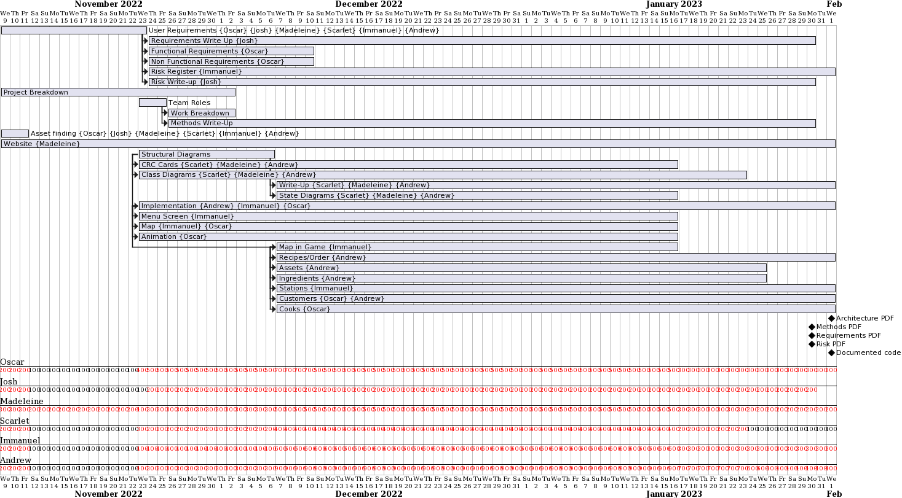

Work Breakdown
To decide on our team's architecture we wrote down all the deliverables and then we picked what tasks suits what team member best. We applied this to our gantt chart and this was updated every week. We stuck to these roles well but we made sure that if it was beneficial to be lenient. If a team needed support or a task was deemed more time consuming than assumed then we set more team members to work on it.
Gantt Chart

Credits: University of York: Madeleine Nielsen https://github.com/mud66 (mn1013@york.ac.uk), Scarlet Desorgher https://github.com/SGDes(sgd516@york.ac.uk), Immanuel Ghaly https://github.com/imozwastaken (ihaag500@york.ac.uk), Oscar Gunn https://github.com/0s-Cr (og676@york.ac.uk), Andrew Palombo https://github.com/aopalombo (ap2179@york.ac.uk), Josh Thomas https://github.com/jt1883(jt883@york.ac.uk)